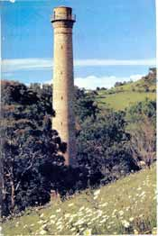
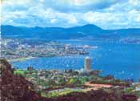
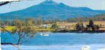
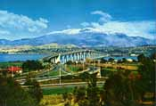
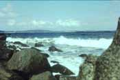
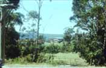
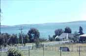

|
|
|
 Taroona Shot
 Blick auf Hobart
 Mont Wellington
 Tasman-Brücke
 Blick auf das Meer
 der Derwent-River
 Blick auf den Derwent River
|
Als Kapitänleutnant David Collins 1804, knapp 16 Jahre nach Ankunft der ersten Flotte in Sydney, im Mündungsdelta des River Derwent Hobart gründete, hätte er sich keinen schöneren Platz für die Inselhauptstadt aussuchen können. Umgeben von Wasser und mit der Kulisse des 1270 m hohen Mount Wellington als Hintergrund, wirkt die zu Ehren des damaligen Kolonialministers Lord Hobart benannte Stadt sympathisch. Zum Charme von Hobart tragen rund 100 historische Bauwerke bei, die als das besterhaltene Ensemble georgianischer Architektur des Landes gelten und der Kapitale am River Derwent den Beinamen "größtes Freilichtmuseum von Australien" eingebracht haben. Trotz einiger moderner Hochhäuser im Zentrum hat sich die 190000 Einwohner zählende Inselhauptstadt ein beinahe kleinstädtisches Flair bewahren können. Das übersichtliche Zentrum von Hobart lässt sich bequem an einem Tag zu Fuß erkunden. Ausgangspunkt für einen Stadtrundgang ist der Hafen an der Sullivans Cove mit dem Victoria Dock, an dem Fischtrawler und Langustenkutter anlegen. Vom benachbarten Constitution Dock starten Ausflugsboote zu Fahrten auf dem breiten Mündungstrichter des River Derwent. Gegen Jahresende quillt der kleine Hafen über vor Menschen, die dem Ausgang der Sydney-Hobart-Regatta entgegenfiebern. Restaurierte alte Lagerhäuser reihen I sich an der Hunter Street nördlich des Victoria Dock. Nur wenige Fußminuten sind es vom Hafenviertel zur Macquarie Street, der Bauwerke im georgianischen Stil der frühen Kolonialzeit Eleganz verleihen. Randvoll mit Fossilien, Steinen und präparierten Tieren ist das Tasmanian Museum and Art Gallery. Das Museum überrascht mit einer hervorragen- den Sammlung zur Kultur der tasmanischen Ureinwohner. Die angegliederte Kunstgalerie zeigt einen Querschnitt australischer Malerei von der Klassik bis zur Moderne. An der Ecke von Macquarie und Elizabeth Street stehen sich zwei Renaissance-Doubletten gegenüber - die Town Hall von 1864 und das vier Jahre später errichtete General Post Office. Zwischen Elizabeth Street und Murray Street verläuft die Ladenstraße Cat and Fiddle Arcade, in der bunte Figuren aus alten Kinderliedern den Flaneuren beim Einkaufsbummel zugucken. Eine Sammlung von historischen Möbeln, Tafelsilber, Glas, Keramik, Büchern, Gemälden und anderen Antiquitäten präsentiert die Allport Library mit dem Museum of Fine Arts im Komplex des State Library Building in der Murray Street. Im Schnittwinkel von Murray Street und Macquarie Street ragt die neogotische St. Davids Cathedral mit verzier- ten Spitzbogenfenstern auf. Das Herz der Stadt schlägt am Franklin Square, den hohe alte Platanen säumen. Eine Bronzestatue erinnert an Sir John Franklin, den Gouverneur von Tasmanien zwischen 1837 und 1843. Vorbei am Parliament House, einem klassizistischen Steinkoloss mit Portikus aus dorischen Säulen, den Sträflinge zwischen 1835 und 1841 ursprünglich als Zollstation errichteten, geht es zum Salamanca Place. Vor der Kulisse der aus dicken Sandsteinquadern erbauten Lagerhäuser und Kontore, in die heute Cafes, Restau- rants, Gemäldegalerien und Läden für tasmanisches Kunsthandwerk eingezogen sind, findet samstagvormittags ein (Floh-)Markt statt. Eine virtuelle Reise auf den Kontinent des ewigen Eises kann man im Antarctic Adventure Centre am Salamanca Square unternehmen. Zwischen zwei georgianischen Sandsteingebäuden führen die Kellys Steps zum Altstadtareal von Battery Point auf einem Hügel oberhalb des Salamanca Place. In strategisch günstiger Position hatte man dort zur Verteidigung der Stadt 1818 ein Artilleriebataillon stationiert. Kleine georgianische Wohnhäuser gruppieren sich am Arthur Circus um den einstigen Dorfanger. Im Van Diemens land Memorial Folk Museum im 1836 erbauten Narryna House sind Memorabilien der Pionierzeit ausgestellt. Die Geschichte der Seefahrt und des Walfangs in tasmanischen Gewässern illustriert das Maritime Museum im Secheron House von 1831. Ein schönes Panorama von Hobart und dem Derwent-Delta bietet sich vom 340 m hohen Mount Nelson. Am Fuße des Aussichtsberges liegt Tudor Village, das Modell eines mittelalterlichen englischen Dorfes. In den 1818 gegründeten Royal Tasmanian Botanical Gardens nördlich der City, die zu den schönsten Parks von Australien gehören, kann man Pflanzen aus aller Welt entdecken. Unter der Glaskuppel eines großen Gewächshau- ses gedeihen tropische Regenwaldpflanzen. Fernöstliches Flair vermittelt der Japanese Garden. In einem Park steht im Vorort Newtown das elegante Runnymede House mit Originalinventar aus dem Jahre 1836, das man besichtigen kann. Bei einer Führung durch die Cadbury Schweppes Chocolate Factory in Claremont kann man sich ein Bild von der Schokoladenherstellung machen. In der Cascade Brewery am westlichen Stadtrand wird seit 1827 Bier gebraut. Auf Hobarts )Hausberg(, den 1270 m hohen Mount Wellington, haarnadelt eine 21 km lange Panoramastraße. An klaren Tagen bietet sich von dort ein weiter Blick über den Südosten von Tasmanien. Ein Spaziergang führt vom Aussichtspunkt zu den abgebrochenen Felssäulen Organ Pipes, die wie versteinerte Orgelpfeifen wirken (hin und zurück 3 km/1 Std.).
|